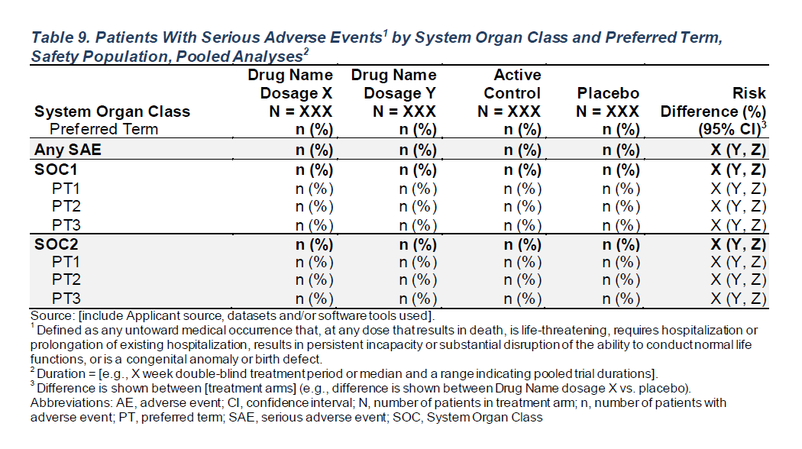

FDA Table 9
Patients With Serious Adverse Events by System Organ Class and Preferred Term, Safety Population, Pooled Analyses

gtsummary Table Setup
|
Primary System Organ Class Dictionary-Derived Term |
A: Drug X N = 1341 |
B: Placebo N = 1341 |
C: Combination N = 1321 |
|---|---|---|---|
| Any SAE | 104 (78%) | 101 (75%) | 99 (75%) |
| cl A | 48 (36%) | 48 (36%) | 50 (38%) |
| dcd A.1.1.1.2 | 48 (36%) | 48 (36%) | 50 (38%) |
| cl B | 79 (59%) | 78 (58%) | 76 (58%) |
| dcd B.1.1.1.1 | 47 (35%) | 49 (37%) | 43 (33%) |
| dcd B.2.2.3.1 | 48 (36%) | 54 (40%) | 51 (39%) |
| cl D | 50 (37%) | 42 (31%) | 51 (39%) |
| dcd D.1.1.1.1 | 50 (37%) | 42 (31%) | 51 (39%) |
| 1 n (%) | |||
Function Details
make_table_09()
Required variables:
-
df: must contain the variables specified byid_var,arm_var,saffl_var,ser_var,soc_var, andpref_var. -
denominator(if specified): must contain the variables specified byid_var,saffl_var, andarm_var.
| Argument | Description | Default |
df |
(data.frame) Dataset (typically ADSL) required to build table. |
No default |
denominator |
(character) Alternative dataset used only to calculate column counts. |
NULL |
return_ard |
(flag) Whether an ARD should be returned. |
TRUE |
id_var |
(character) Identifier variable used to count the participants within each flag. |
"USUBJID" |
arm_var |
(character) Arm variable used to split table into columns. |
"ARM" |
saffl_var |
(character) Flag variable used to indicate inclusion in safety population. |
"SAFFL" |
ser_var |
(character) FMQ scope variable to use in table. |
"AESER" |
soc_var |
(character) FMQ reference name variable to use in table. |
"AESOC" |
pref_var |
(character) FMQ scope, can be ‘“NARROW”’ or ‘“BROAD”’. |
"AEDECOD" |
lbl_overall |
(character) (if specified): an overall column will be added to the table with the given value as the column label. |
NULL |
ARD Setup
$tbl_hierarchical{cards} data frame: 81 x 15 group1 group1_level group2 group2_level variable variable_level context stat_name stat_label stat stat_fmt fmt_fn warning error gts_column
1 ARM A: Drug X <NA> AESOC cl A hierarch… n n 48 48 <fn> stat_1
2 ARM A: Drug X <NA> AESOC cl A hierarch… N N 134 134 <fn> stat_1
3 ARM A: Drug X <NA> AESOC cl A hierarch… p % 0.358 36 <fn> stat_1
4 ARM A: Drug X <NA> AESOC cl B hierarch… n n 79 79 <fn> stat_1
5 ARM A: Drug X <NA> AESOC cl B hierarch… N N 134 134 <fn> stat_1
6 ARM A: Drug X <NA> AESOC cl B hierarch… p % 0.59 59 <fn> stat_1
7 ARM A: Drug X <NA> AESOC cl D hierarch… n n 50 50 <fn> stat_1
8 ARM A: Drug X <NA> AESOC cl D hierarch… N N 134 134 <fn> stat_1
9 ARM A: Drug X <NA> AESOC cl D hierarch… p % 0.373 37 <fn> stat_1
10 ARM A: Drug X <NA> ..ard_hierarchical_overall.. TRUE hierarch… n n 104 104 <fn> stat_1ℹ 71 more rowsℹ Use `print(n = ...)` to see more rowsrtables Table Setup
# Load Libraries & Data
library(cardinal)
adsl <- random.cdisc.data::cadsl
adae <- random.cdisc.data::cadae
# Select Preferred Term Variable
pref_var <- "AEDECOD"
# Output Table
risk_diff <- list(arm_x = "B: Placebo", arm_y = "A: Drug X") # optional
make_table_09_rtables(adae = adae, alt_counts_df = adsl, pref_var = pref_var, risk_diff = risk_diff)System Organ Class A: Drug X B: Placebo C: Combination Risk Difference (%) (95% CI)
Dictionary-Derived Term (N=134) (N=134) (N=132) (N=268)
—————————————————————————————————————————————————————————————————————————————————————————————————————
Any SAE 104 (77.6%) 101 (75.4%) 99 (75.0%) -2.2 (-12.4 - 7.9)
cl A 48 (35.8%) 48 (35.8%) 50 (37.9%) 0.0 (-11.5 - 11.5)
dcd A.1.1.1.2 48 (35.8%) 48 (35.8%) 50 (37.9%) 0.0 (-11.5 - 11.5)
cl B 79 (59.0%) 78 (58.2%) 76 (57.6%) -0.7 (-12.5 - 11.0)
dcd B.1.1.1.1 47 (35.1%) 49 (36.6%) 43 (32.6%) 1.5 (-10.0 - 13.0)
dcd B.2.2.3.1 48 (35.8%) 54 (40.3%) 51 (38.6%) 4.5 (-7.1 - 16.1)
cl D 50 (37.3%) 42 (31.3%) 51 (38.6%) -6.0 (-17.3 - 5.4)
dcd D.1.1.1.1 50 (37.3%) 42 (31.3%) 51 (38.6%) -6.0 (-17.3 - 5.4) Function Details
make_table_09()_rtables
Required variables:
-
adae:USUBJID,AESER,AESOC, and the variables specified bypref_var,arm_var, andsaffl_var. -
alt_counts_df(if specified):USUBJIDand the variables specified byarm_varandsaffl_var.
| Argument | Description | Default |
adae |
(data.frame) Dataset (typically ADAE) required to build table. |
No default |
alt_counts_df |
(character) Alternative dataset (typically ADSL) used only to calculate column counts. |
NULL |
show_colcounts |
(flag) Whether column counts should be printed. |
TRUE |
arm_var |
(character) Arm variable used to split table into columns. |
"ARM" |
saffl_var |
(character) Flag variable used to indicate inclusion in safety population. |
"SAFFL" |
pref_var |
(character) Preferred term variable from adae to include in the table. |
"AEDECOD" |
lbl_pref_var |
(character) Label corresponding to preferred term variable pref_var to print in the table. |
formatters::var_labels(adae, fill = TRUE)[pref_var] |
lbl_overall |
(character) If specified, an overall column will be added to the table with the given value as the column label. |
NULL |
risk_diff |
(named
|
NULL |
prune_0 |
(flag) Whether all-zero rows should be removed from the table. |
TRUE |
annotations |
(named list of character) List of annotations to add to the table. Valid annotation types are title, subtitles, main_footer, and prov_footer. Each name-value pair should use the annotation type as name and the desired string as value. |
NULL |
gt Table Setup
| Primary System Organ Class Dictionary-Derived Term |
A: Drug X (N=134) |
B: Placebo (N=134) |
C: Combination (N=132) |
|---|---|---|---|
| Any SAE | 104 (77.6%) | 101 (75.4%) | 99 (75.0%) |
| cl A | 48 (35.8%) | 48 (35.8%) | 50 (37.9%) |
| dcd A.1.1.1.2 | 48 (35.8%) | 48 (35.8%) | 50 (37.9%) |
| cl B | 79 (59.0%) | 78 (58.2%) | 76 (57.6%) |
| dcd B.1.1.1.1 | 47 (35.1%) | 49 (36.6%) | 43 (32.6%) |
| dcd B.2.2.3.1 | 48 (35.8%) | 54 (40.3%) | 51 (38.6%) |
| cl D | 50 (37.3%) | 42 (31.3%) | 51 (38.6%) |
| dcd D.1.1.1.1 | 50 (37.3%) | 42 (31.3%) | 51 (38.6%) |
Function Details
make_table_09_gtsum()
Required variables:
-
adae: must contain the variables specified byid_var,arm_var,saffl_var,ser_var,soc_var, andpref_var. -
alt_counts_df(if specified): must contain the variables specified byid_var,saffl_var, andarm_var.
| Argument | Description | Default |
|---|---|---|
adae |
(data.frame) Dataset (typically ADAE) required to build table. |
No default |
alt_counts_df |
(character) Alternative dataset (typically ADSL) used only to calculate column counts. |
NULL |
show_colcounts |
(flag) Whether column counts should be printed. |
TRUE |
arm_var |
(character) Arm variable used to split table into columns. |
"ARM" |
id_var |
(character) Name of the unique subject identifiers variable. |
"USUBJID" |
saffl_var |
(character) Safety population flag variable from adae to include in the table. |
"SAFFL" |
ser_var |
(character) Serious Event variable from adae to include in the table. |
"AESER" |
pref_var |
(character) Preferred term variable from adae to include in the table. |
"AEDECOD" |
soc_var |
(character) Preferred term variable from adae to include in the table. |
"AESOC" |
lbl_pref_var |
(character) Label corresponding to preferred term variable pref_var to print in the table. |
formatters::var_labels(adae, fill = TRUE)[pref_var] |
lbl_soc_var |
(character) Label corresponding to system organ class variable soc_var to print in the table. |
formatters::var_labels(adae, fill = TRUE)[soc_var] |
lbl_overall |
(character) If specified, an overall column will be added to the table with the given value as the column label. |
NULL |
prune_0 |
(flag) Whether all-zero rows should be removed from the table. |
TRUE |
annotations |
(named list of character) List of annotations to add to the table. Valid annotation types are title, subtitles, and a list of characters called footnotes. Each name-value pair should use the annotation type as name and the desired string as value. |
NULL |
risk_diff |
(list of character vectors) List of character vectors. Each vector must be of length 2 and contain the name of treatment arms to calculate risk difference and its 95% CI for. Those names must exist in the arm_var column of the dataset specified in adae. |
NULL |
Tplyr Table Setup
# A tibble: 9 × 4
row_label1 `var1_A: Drug X` `var1_B: Placebo` `var1_C: Combination`
<chr> <chr> <chr> <chr>
1 "System Organ Class \n Reported Term for Adverse Event" "A: Drug X\n(N=134)" "B: Placebo\n(N=134)" "C: Combination\n(N=132)"
2 "Any SAE" "104 ( 77.6%)" "101 ( 75.4%)" " 99 ( 75.0%)"
3 "cl A" " 48 ( 35.8%)" " 48 ( 35.8%)" " 50 ( 37.9%)"
4 " dcd A.1.1.1.2" " 48 ( 35.8%)" " 48 ( 35.8%)" " 50 ( 37.9%)"
5 "cl B" " 79 ( 59.0%)" " 78 ( 58.2%)" " 76 ( 57.6%)"
6 " dcd B.1.1.1.1" " 47 ( 35.1%)" " 49 ( 36.6%)" " 43 ( 32.6%)"
7 " dcd B.2.2.3.1" " 48 ( 35.8%)" " 54 ( 40.3%)" " 51 ( 38.6%)"
8 "cl D" " 50 ( 37.3%)" " 42 ( 31.3%)" " 51 ( 38.6%)"
9 " dcd D.1.1.1.1" " 50 ( 37.3%)" " 42 ( 31.3%)" " 51 ( 38.6%)" Function Details
make_table_09_tplyr()
Required variables:
-
adae: must contain the variables specified byid_var,arm_var,saffl_var,ser_var,soc_var, andpref_var. -
alt_counts_df(if specified): must contain the variables specified byid_var,saffl_var, andarm_var.
| Argument | Description | Default |
|---|---|---|
adae |
(data.frame) Adverse events dataset (typically ADAE) required to build table. |
No default |
alt_counts_df |
(character) Alternative dataset used only to calculate column counts. |
NULL |
id_var |
(character) Name of the unique subject identifiers variable. |
"USUBJID" |
arm_var |
(character) Name of the treatment arm variable used to split table into columns. |
"ARM" |
saffl_var |
(character) Name of the safety flag variable which must contain at least “Y” for “Yes”. |
"SAFFL" |
ser_var |
(character) Name of the serious adverse event flag variable which must contain at least “Y” for “Yes”. |
"AESER" |
soc_var |
(character) Name of the system organ class variable from adae to include in the table. |
"AESOC" |
pref_var |
(character) Name of the preferred term variable from adae to include in the table. |
"AEDECOD" |
lbl_soc_var |
(character) Label corresponding to system organ class variable soc_var to print in the table. |
"System Organ Class" |
lbl_pref_var |
(character) Label corresponding to preferred term variable pref_var to print in the table. |
"Reported Term for Adverse Event" |
risk_diff_pairs |
(list of character vectors) Each vector contains two treatment arm names to calculate risk difference for. The names must exist in the arm_var column of the adae dataset. |
NULL |
show_colcounts |
(boolean) Whether column counts should be printed. |
TRUE |
lbl_overall |
(character) If specified, an overall column will be added to the table with the given value as the column label. |
NULL |
prune_0 |
(flag) Whether all-zero rows should be removed from the table. |
TRUE |
tplyr_raw |
(flag) Whether the raw tibble created using Tplyr functions should be returned or a presentation ready gt_table (default). |
FALSE |
annotations |
(named list of character) List of annotations to add to the table. Valid annotation types are title, subtitles, main_footer, and prov_footer. Each name-value pair should use the annotation type as name and the desired string as value. |
NULL |